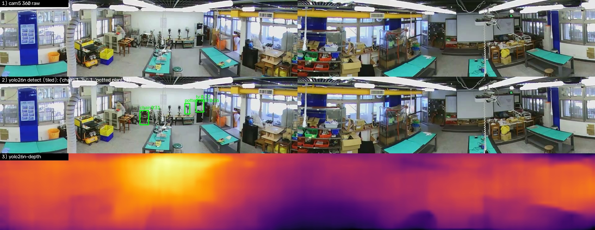
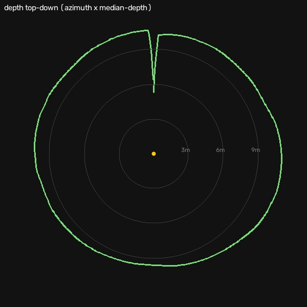
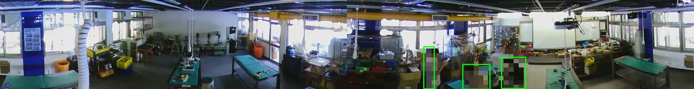
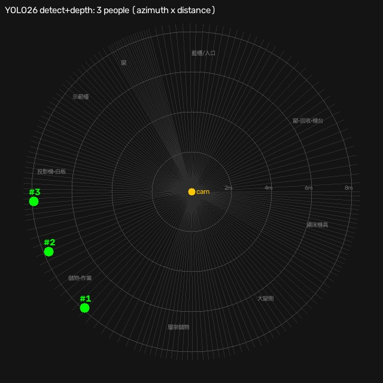
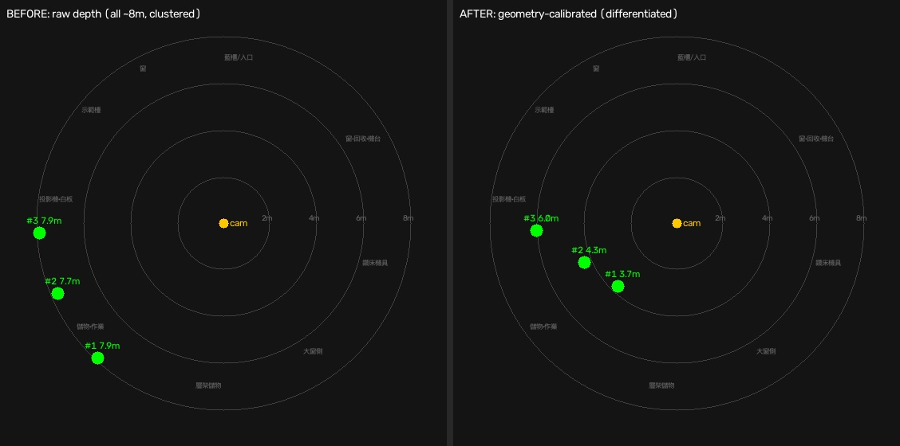
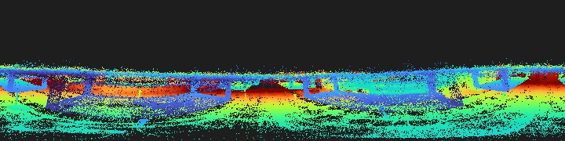
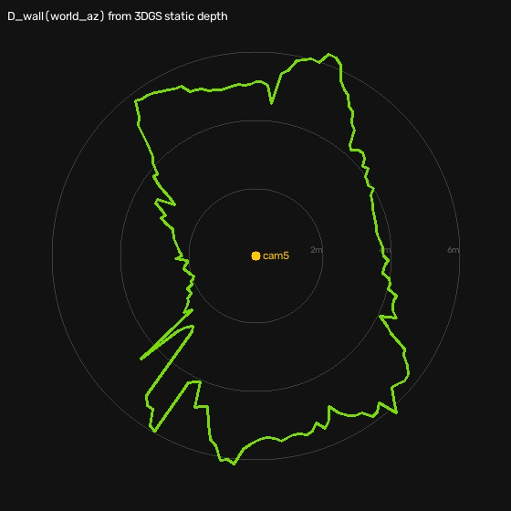
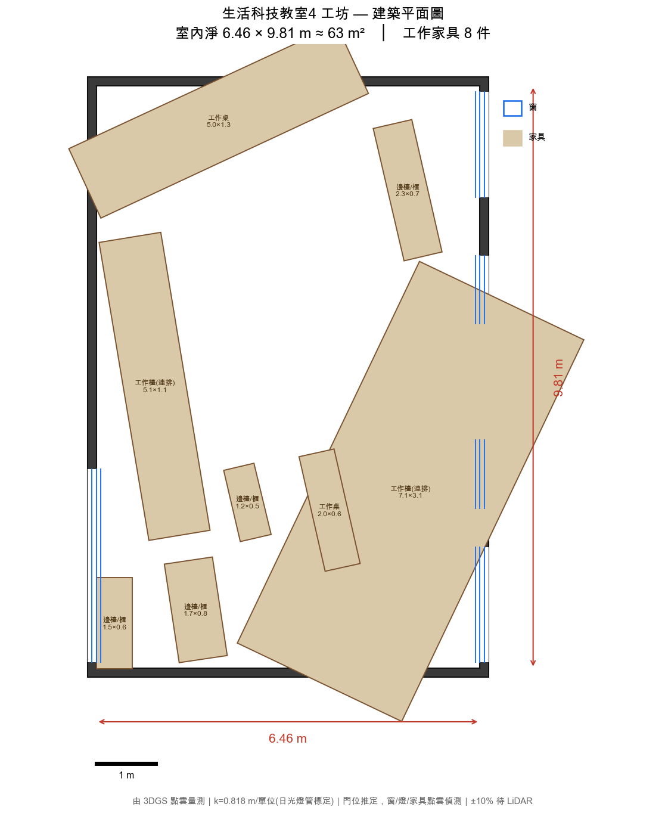

YOLO26 偵測 + 單目深度
把人流定位升級為「方位 × 距離」
把 Ultralytics YOLO26（2026-01 釋出，NMS-free）的偵測與單目深度，接進生科教室四（lt4）既有的 360° 環景人流管線，並用真實上課影像驗證。
一、YOLO26 效能（Mac · Apple Silicon MPS）
| 模型 | MPS | CPU |
|---|---|---|
| yolo26n 偵測 | 5.0 ms / 201.8 FPS | 6.8 ms / 147 FPS |
| yolo26n-depth 深度 | 4.6 ms / 215.8 FPS | 9.0 ms / 111 FPS |
二、空教室：偵測 + 深度


三、完整 POC：真實上課影像（3 位學生）
素材：攝影機5_20260520_111000@300s（5/20 上課日）。為保護學生隱私，人物已打馬賽克；未打碼原檔僅存本機。


| # | 方位角 → 分區（既有語意） | 距離（深度新增） | 比背景牆近 | conf |
|---|---|---|---|---|
| 1 | 223° · 儲物·作業 | ~8 m（原始） | +1.4 m | 0.82 |
| 2 | 247° · 儲物·作業 | ~8 m | +1.6 m | 0.46 |
| 3 | 267° · 投影機·白板 | ~8 m | +1.7 m | 0.82 |
四、相對既有管線的升級
- 偵測器：mediapipe EfficientDet-lite0 → YOLO26（更準、多類別）。
- 定位：原「方位角分區（徑向靠魚眼幾何、不可靠）」→ 加上 YOLO26-depth 學習式距離，每人得「哪一區 + 多遠」。
- 沿用：既有
lt4_register_params方位角 δ(θ) 對位、lt4_flow分區語意，無縫接上。
五、幾何校正（已做，成功）
原始環景深度是「柔和場」→ 3 人距離都擠在 ~8m、無法分離；簡單的仿射校正實測還會跑出負值而失敗。改用原理性校正：
比值(人/牆)錨定「人在牆前多近」（比絕對深度可靠），幾何牆距提供隨方位變化的真實尺度；相機≈場景原點（經機台距離 1.8–11.1m 驗證合理）。

| # | 分區 | 原始 | 幾何校正後 |
|---|---|---|---|
| 1 | 儲物·作業 | ~8 m | 3.7 m |
| 2 | 儲物·作業 | ~8 m | 4.3 m |
| 3 | 投影機·白板 | ~8 m | 6.0 m |
尚存不確定性：相機位姿為估計值、bbox 牆距略大於實際牆面。要再精確，下一步是從 cam5 實測位姿渲染 3DGS/LiDAR 靜態深度當 ground truth ——已執行，見下節（含誠實結論）。
六、3DGS 靜態深度真校正（已渲染 + 誠實結論）
把 lt4 的 LiDAR/3DGS 壓縮 splat（lt4_lidar_walk.compressed.ply，PlayCanvas 格式、110 萬點）解碼，從估計 cam5 位姿渲染等距柱狀（equirectangular）靜態深度，抽出逐方位角真實牆距 D_wall(θ) 取代原本的 bbox 對角常數。


| 對位線索 | lag | 手性 | corr |
|---|---|---|---|
| 亮度 | 184° | 翻 | 0.46 |
| 過曝(窗) | 29° | 不翻 | 0.35 |
| 藍−紅(日光) | 353° | 翻 | 0.37 |
| 結構邊緣 | 196° | 不翻 | 0.22 |
結論：D_wall 房間輪廓與 cam 位姿可信；但逐人絕對公制距離受全域偏航歧義影響，無法只靠影像↔深度外觀比對定案。要真正精準化，需地標錨點閉合對位——見下節。
七、交叉驗證：實測物件尺寸確認 D_wall 是真公制
既有 measure_space.py 用天花板 T8 日光燈管（4ft=1.22m 全球標準）當參考物標定 3DGS 場景比例，產出公制平面圖 arch_elements.json：k=0.859 m/單位、室內淨 8.82×10.48m ≈93㎡、牆厚 0.15m、門/黑板/12 燈具、8 件家具足跡（工作檯連排 7.58×1.91m…）。

lt4_lidar_walk 點雲 X 跨距 8.88m ≈ 實測 8.82m（差 <1%） → 證明該 splat 已是公制，D_wall 的 1.9–6.3m 是真公尺，被獨立參考物量測確認，非任意場景單位。八、pibook Hailo？
pibook 有 Hailo-8（26 TOPS），但現有 .hef 只到 YOLOv5/6/8/x、沒有也難編 YOLO26（需 x86 DFC、新 NMS-free/depth 架構支援未定），且 Hailo 正被現役 camera_hub 佔用。要 Hailo 加速偵測，現實選擇是沿用 YOLOv8s。